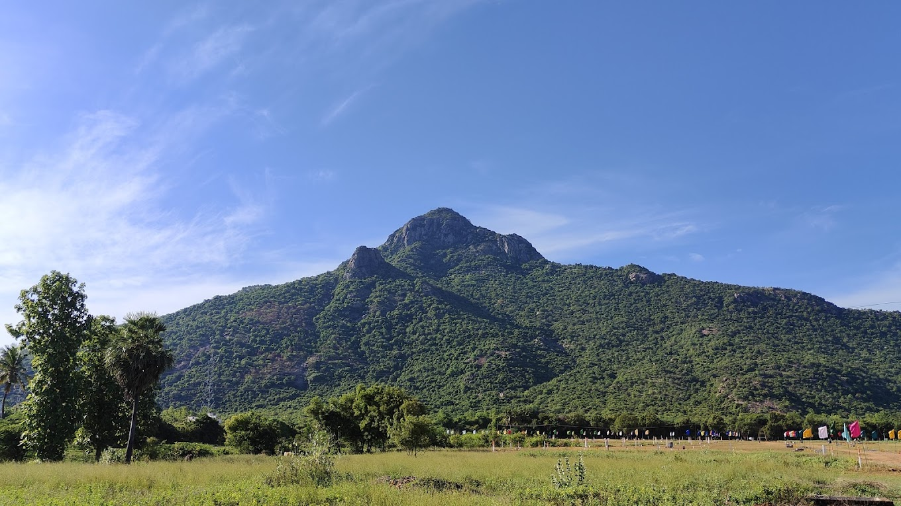

TIRUVANNAMALAI
Annamalai Hill

Known for its religious and spiritual importance, Annamalai Hill is associated with Lord Shiva,as it is believed to represent the cosmic mountain, Meru.
The hill is home to the famous Arunachaleswarar Temple, dedicated to Lord Shiva. It is one of the largest and most important Shiva temples in Tamil Nadu.
Pilgrims visit Annamalai Hill for Girivalam, a ritual walk around the hill, which is believed to bring spiritual merit.
The hill offers panoramic views of the surrounding plains and is a popular spot for nature lovers and trekkers.